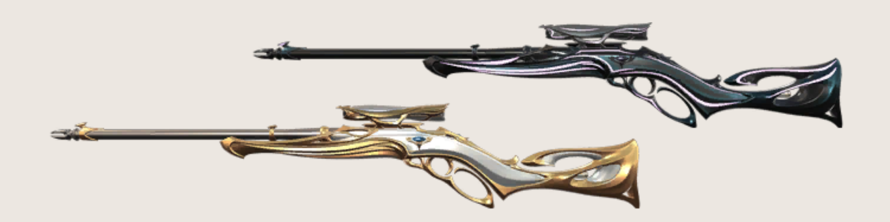
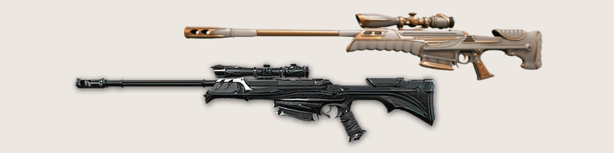

Sabe as snipers? São os famosos rifles de precisão – que também estão representados no jogo. Esse tipo de armamento é indicado aos jogadores que gostam de pescar adversários de longe. Com eles, é possível eliminar um inimigo com apenas um tiro!
. Marshal: É o rifle de precisão mais fraco do game. Possui uma única mira de 2.5x, tiros mais rápidos do que a Operator e dano considerável. Ao contrário da concorrente, é preciso disparar mais de uma bala para matar um inimigo – a não ser que você acerte a cabeça, claro. Aí é insta kill como qualquer outro armamento. Semelhante à Scout do CS:GO. Rifle de precisão leve com zoom único. Seus tiros são mais rápidos do que a Operator. Ótima para combates à longa distância, mas o dano não é tão alto.
. Operator: Já viu a semelhança logo de cara, né? A Operator é equivalente à AWP do CS:GO. É o rifle de precisão mais brutal do Valorant, capaz de deitar um oponente com apenas um tiro, independente da região atingida pela bala. É equipada com dois zooms e extremamente recomendada para combates à longa distância. Tem que ter uma no time. Sempre. Arma mais letal do Valorant. Não funciona em movimento e seus disparos são lentos, porém uma única bala é capaz de abater o inimigo.
